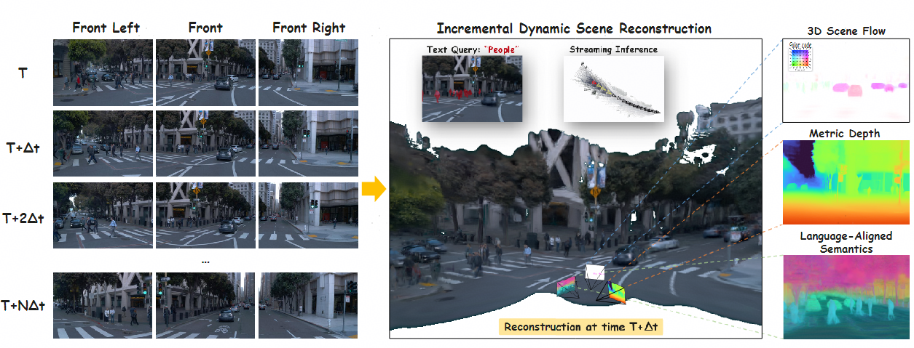
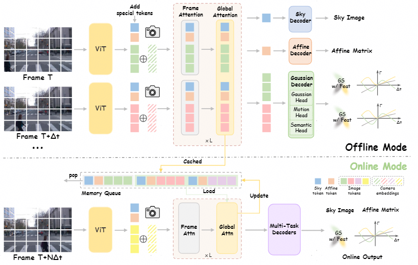
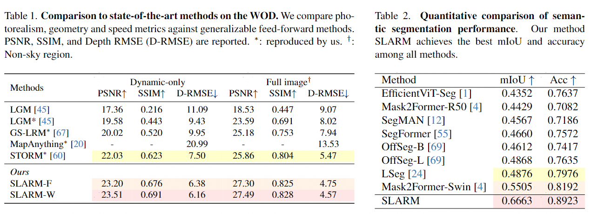
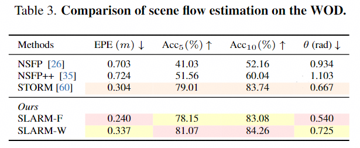
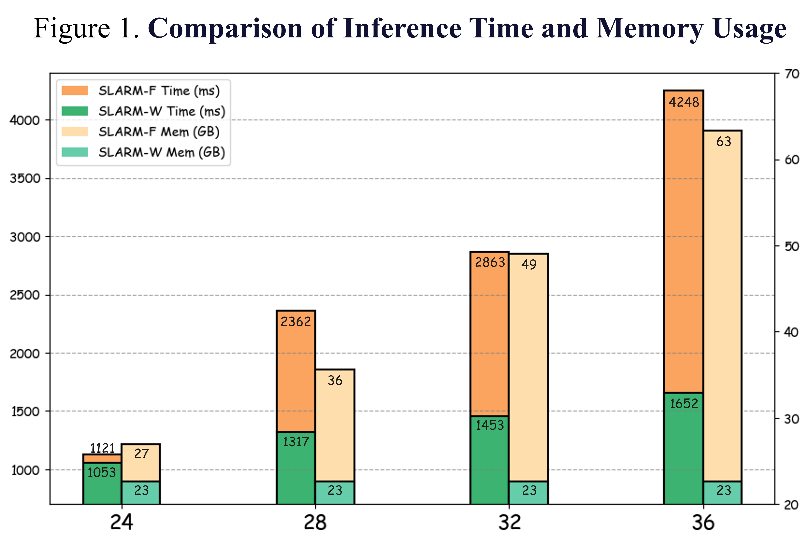

Abstract

We propose SLARM, a feed-forward model that unifies dynamic scene reconstruction, semantic understanding, and real-time streaming inference. SLARM captures complex, non-uniform motion through higher-order motion modeling, trained solely on differentiable renderings without any flow supervision. Besides, SLARM distills semantic features from LSeg to obtain language-aligned representations. This design enables semantic querying via natural language, and the tight coupling between semantics and geometry further enhances the accuracy and robustness of dynamic reconstruction. Moreover, SLARM processes image sequences using window-based causal attention, achieving stable, low-latency streaming inference without accumulating memory cost. Within this unified framework, SLARM achieves state-of-the-art results in dynamic estimation, rendering quality, and scene parsing, improving motion accuracy by 21%, reconstruction PSNR by 1.6 dB, and segmentation mIoU by 20% over existing methods.
Model / Pipeline

Our method, SLARM, follows the pipeline illustrated in Figure. Given a video sequence \{\mathbf{I}_t\}_{t=1}^{T}, we first extract visual features using a Vision Transformer, where each frame \mathbf{I}_t is partitioned into non-overlapping patches. To inject geometric priors, we encode each pixel's viewing ray as a 6D Plücker coordinate derived from known camera intrinsics and extrinsics, linearly project it, and add it to the corresponding visual tokens. Temporal context is incorporated through a learnable embedding of the absolute timestamp t. Following STORM, we further concatenate two specialized tokens: a Sky token to model the background sky region and an Affine token to compensate for exposure and white-balance variations across multi-view cameras. The resulting enriched token sequence is then processed by VGGT, which alternates between frame-wise and global self-attention to effectively capture spatio-temporal structure.
Experimental Results
As shown in Table 1. SLARM outperforms all generalizable feed-forward methods across all metrics, with consistent gains of 1.6 dB in PSNR on full images and improvements of over 1.5 dB in PSNR and 0.07 in SSIM on dynamic regions. The semantic segmentation quantitative results are summarized in Table 2. SLARM achieves highly coherent and accurate semantic predictions within the 3D reconstruction pipeline, and outperforms the strong 2D baselines. As shown in Table 3, SLARM-F achieves an EPE of 0.240 m, outperforming NSFP (0.703 m) and STORM (0.304 m). Additionally, it attains Acc₅ and Acc₁₀ of 78.15% and 83.08%, respectively, significantly higher than other methods.



4DGS (with Semantic) Visualization
We input the 4DGS predicted by SLARM into a 3DGS visualizer to showcase the results from a new perspective. The results demonstrate that our method accurately reconstructs dynamic motion in the scene. Simultaneously, we obtain the corresponding categories of the language-aligned semantic features predicted by the model through text query and assign specific colors to each category, allowing for a better observation of the 4D semantic information.
Streaming Scene Reconstruction
This is a schematic diagram of incremental inference of the SLARM model in online mode. The red view frustum represents the current frame being inferred at each time step, the yellow view frustum represents the frame within the window attention interaction window when calculating the result of the current frame, and the black view frustum represents the historical frames. We also accumulate the historical point cloud results and increase the transparency of the historical point cloud to more clearly distinguish the current frame from the historical frames.
Offline Feed-forward Reconstruction Examples
SLARM reconstructs 3D representations, 3d scene flow and language-aligned semantic in a feed-forward manner. For each example, we present the input frames (Context RGB), reconstructed RGB, depth maps, predicted semantic feature, and predicted scene flow. Ground truth scene flows are included for qualitative comparison, though they are not used for supervision. It can be observed that SLARM is able to model diverse scene motions. We perform PCA on the semantic features to reduce them to 3 dimensions, then convert them into RGB images for visualization. After fine-tuning with semantically annotated data, as the category assignments have undergone significant changes (e.g., all vegetation is categorized as "others"), the model-predicted features and the target features for knowledge distillation exhibit numerical discrepancies, resulting in distinct color differences in the visualized feature maps.
Online Incremental Reconstruction Examples
This is the result of the SLARM model in incremental inference. The results show that the inference results from offline and online modes are not significantly different, indicating that we can maintain good accuracy while reducing the amount of computation. In terms of inference time, our online mode exhibits linear time complexity, whereas the offline mode demonstrates quadratic growth. Regarding memory consumption, the online mode maintains a stable memory footprint, while the offline mode incurs an unacceptably high and rapidly increasing memory usage.
BibTeX
@article{slarm2026,
title = {{SLARM}: Streaming and Language-Aligned Reconstruction Model for Dynamic Scenes},
author = {Zhicheng Qiu and Jiarui Meng and Tong-an Luo and Yican Huang and Xuan Feng and Xuanfu Li and Zhan Xu},
journal = {arXiv preprint arXiv:2603.22893},
year = {2026},
note = {Available at \url{https://doi.org/10.48550/arXiv.2603.22893}},
archivePrefix = {arXiv},
eprint = {2603.22893},
primaryClass = {cs.CV}
}
✔
Acknowledgements
We appreciate the code of the STORM open source project.